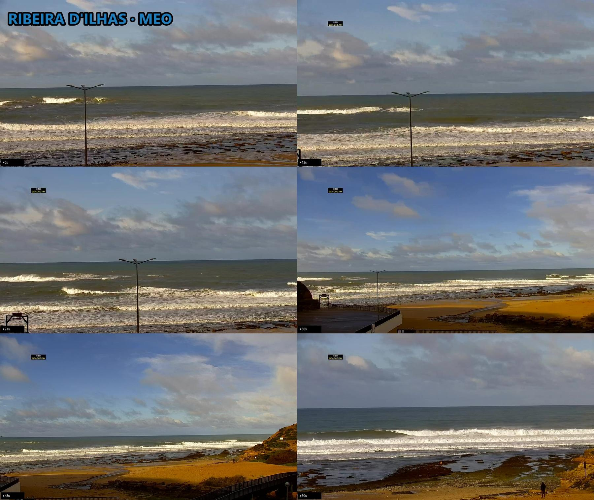
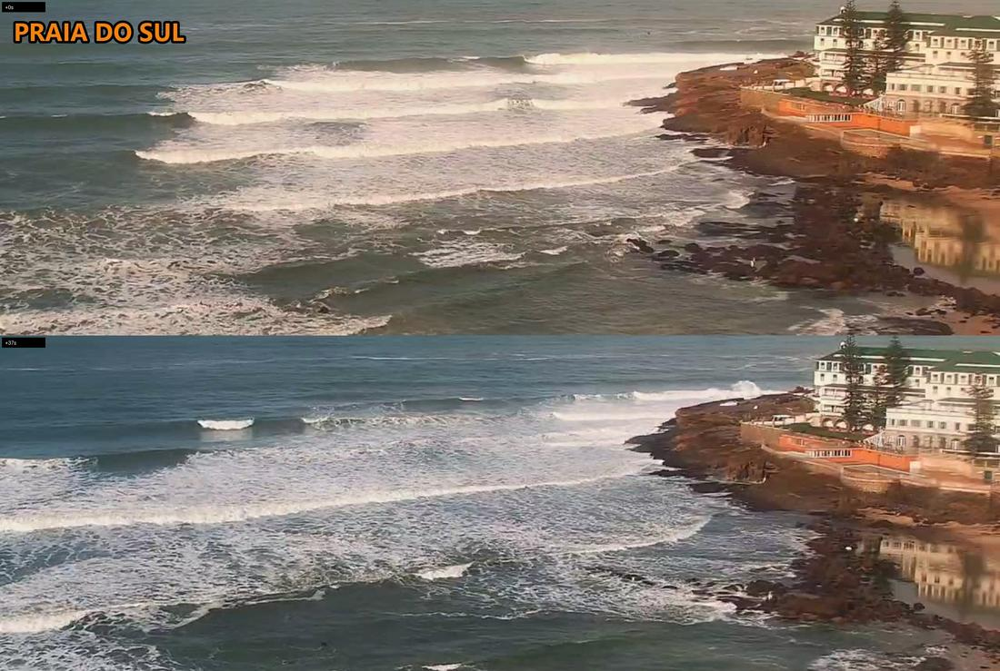
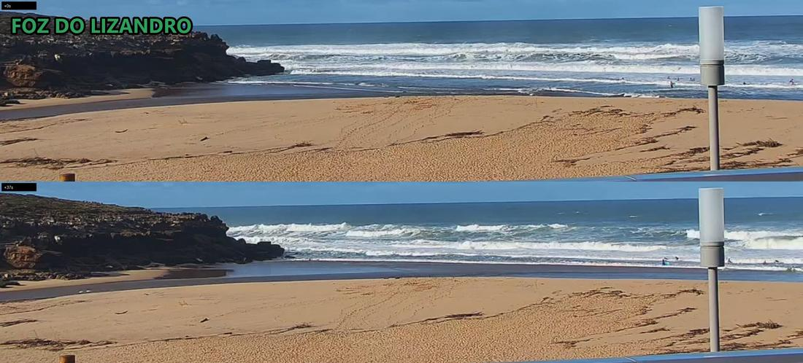

2.4–3.0m★½💤 Skip
2.4–3.0m★★🤔 Marginal
liveoffline
| Ribeira | ★½ | 2.4-3m | messy, closing | -½★ | - | |
|---|---|---|---|---|---|---|
| Norte | ★ | 2.4-3m | ||||
| Sul | ★ | 2.4-3m | messy whitewater | - | ||
| Pedra | ★ | 2.4-3m | cam down | - | ||
| Lizandro | ★★ | 2.4-3m | inside only | +1★ | 7+ busy |
| Ribeira | ★½ | 2.4-3m | |
|---|---|---|---|
| Norte | ★ | 2.4-3m | |
| Sul | ★ | 2.4-3m | |
| Pedra | ★ | 2.4-3m | |
| Lizandro | ★★ | 2.4-3m |
| Ribeira | messy, closing | -½★ | - |
|---|---|---|---|
| Sul | messy whitewater | - | |
| Pedra | cam down | - | |
| Lizandro | inside only | +1★ | 7+ busy |
Wave size & rating: surf-forecast.com Ribeira >>
2.4–3.0m★½💤 Skip
2.4–3.0m★★🤔 Marginal
2.4–3.0m★½💤 Skip
2.4–3.0m★★🤔 Marginal
2.4–3.0m★½💤 Skip
2.4–3.0m★★🤔 Marginal
2.4–3.0m★💤 Skip
2.4–3.0m★💤 Skip
2.4–3.0m★💤 Skip
2.4–3.0m★💤 Skip
2.4–3.0m★💤 Skip
2.4–3.0m★💤 Skip
2.4–3.0m★💤 Skip
2.4–3.0m★💤 Skip
2.4–3.0m★💤 Skip
2.4–3.0m★💤 Skip
2.4–3m★forecast💤 Skip
2.4–3.0m★★🤔 Marginal🏄 Busy
2.4–3.0m★💤 Skip
2.4–3.0m★★🤔 Marginal🏄 Busy
2.4–3.0m★💤 Skip
2.4–3.0m★★🤔 Marginal🏄 Busy
2.4–3.0m★💤 Skip
2.4–3m★forecast💤 Skip
2.4–3m★forecast💤 Skip
2.4–3.0m★½💤 Skip
surfers unclear
MEO fallback (close-up 404): messy whitewater lines closing over the reef; nobody resolvable, undercount cam

2.4–3.0m★💤 Skip
surfers unclear
big messy whitewater sets wrapping the point; a few dark marks in the inside, unclear if bodies or rocks

2.4–3.0m★★🤔 Marginal🏄 Busy
7 surfers
outside messy closeouts; ~7 with boards in the inside whitewater (lesson group, up from 0 at dawn); approx

| When | Ribeira | Norte | Sul | Pedra | Lizandro |
|---|---|---|---|---|---|
| 2026-11-25 09:45morning | POOR-TO-FAIR— | POOR— | POOR— | POOR— | POOR7 |
| 2026-11-25 07:30sunrise | POOR— | FAIR— | POOR-TO-FAIR0 | POOR— | POOR0 |
| 2026-11-24 16:15dusk | POOR0 | POOR— | POOR0 | POOR0 | POOR0 |
| 2026-11-24 14:00afternoon | POOR0 | POOR— | POOR0 | POOR0 | POOR0 |
| 2026-11-24 12:00lunch | POOR0 | POOR— | POOR0 | POOR0 | POOR0 |
| 2026-11-24 09:45morning | POOR6 | POOR— | POOR— | POOR0 | POOR14 |
| 2026-11-24 07:30sunrise | POOR3 | POOR— | POOR0 | POOR— | POOR1 |
| 2026-11-23 16:15dusk | FAIR30 | FAIR— | FAIR10 | FAIR0 | FAIR3 |